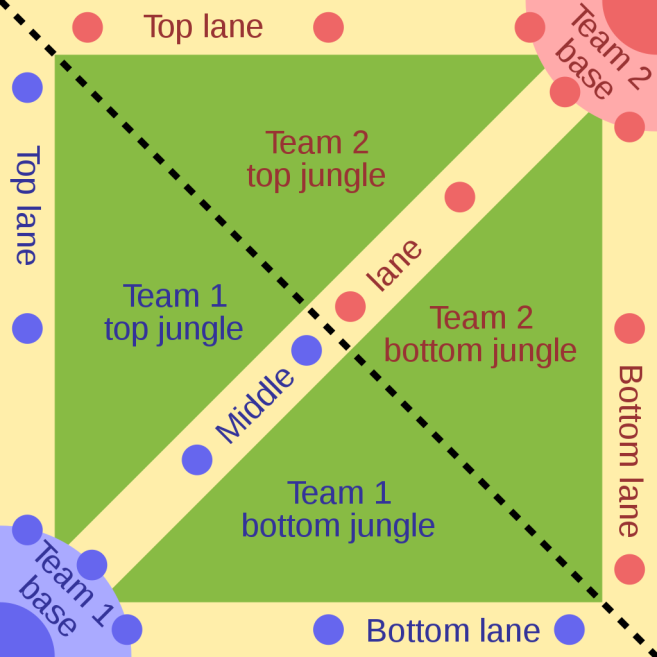

Qu'est ce que League of Legends?
Tout d'abord commençons par l'exposé un peu chiant sur l'histoire du jeu:
League of Legends, communément abrégé par LoL par la communauté est un jeu vidéo de type MOBA (j'expliquerais plus loin ce que c'est)
gratuit développé par Riot Games et sortit au public le 27 octobre 2009.
Au départ il devait être un autre mode de Warcraft III (un jeu développé par Blizzard) inspiré sur le mode Descent of the Ancient,
ou DotA actuel rival de LoL dans le monde du MOBA (c'est pas encore la l'explication).
Cependant nos deux acolytes Brandon Beck et Marc Merrill, fondateurs de Riot Games se sont dit
"Si on aller faire ça sur un moteur (de création de jeu, pas celui de ta voiture) à part.", ainsi naquirent les premières ligne de code de LoL.
